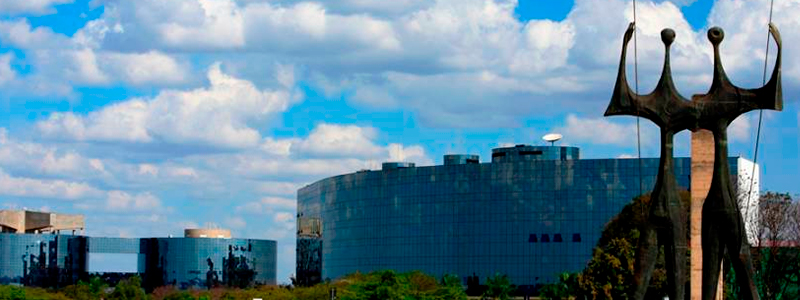
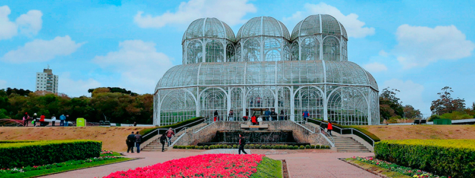
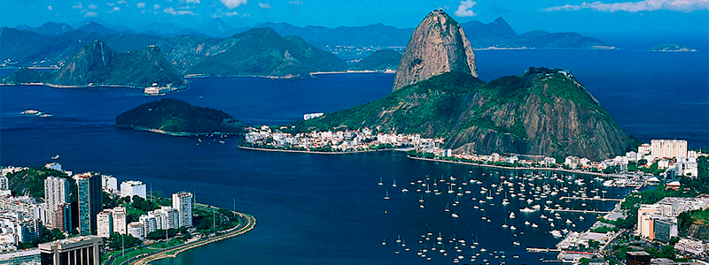
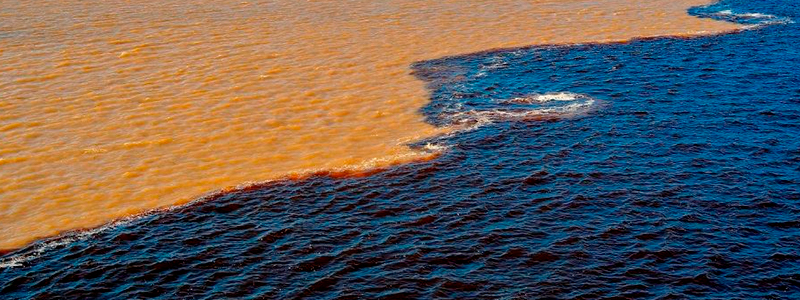
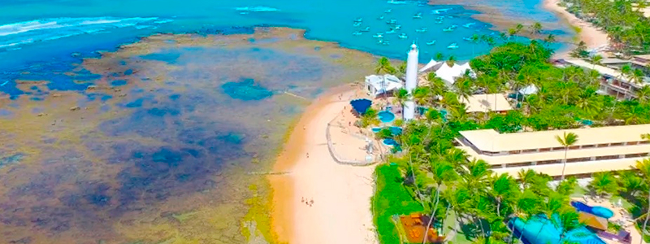

Roteiros Nacionais
Roteiros turísticos nacionais para os estados brasileiros, com tarifas especiais e todo o conforto e praticidade que você merece: aproveite a comodidade e a rapidez de ter tudo resolvido para você na hora de viajar!
CENTRO-OESTE
Apesar de ser uma região com poucas atividades turísticas realizadas pelas pessoas. A nossa natureza rica e diversificada nos proporciona pontos turísticos absurdamente belos e incríveis no centro do país. Esta região é repleta de grutas, cânions, cachoeiras e várias outras belezas naturais e com história que valem muito a pena uma viagem.
Sul
A Região Sul possui uma variedade de lindas paisagens naturais, além disso, sua composição arquitetônica, herdada dos imigrantes europeus lá estabelecidos, cria uma verdadeira atração turística, uma vez que foge completamente da realidade das outras regiões. a natureza é o mais encantador da região, junto com seu clima diferenciado, podendo até mesmo nevar em algumas cidades, sendo um grande atrativo.
Sudeste
A região sudeste é a área mais visitada do país, e o turismo é uma de suas atividades econômicas mais importantes! Encontram-se lá duas das cidades mais importantes do país: o Rio de Janeiro que é mundialmente famoso por suas praias, paisagens incríveis e por seus pontos turísticos,e São Paulo que é considerada a terceira maior cidade do mundo e oferece diversas opções turísticas.
Norte
Curiosamente poucas pessoas realizam atividades turísticas na região norte do Brasil, entretanto, é um dos lugares mais belos do Brasil. A região possui lugares paradisíacos e é perfeita para quem quer fugir das aglomerações, badalações e barulhos dos grandes centros. É um lugar perfeito para você descansar, relaxar, mas também, se aventurar.
Nordeste
Uma região que está entre as grandes rotas de turismo mundial, o Nordeste concentra grandes áreas repletas de belezas naturais, como o extenso litoral, com praias belíssimas de águas quentes e cristalinas que estão entre as mais bonitas do mundo, também estão localizados grandes centros históricos.